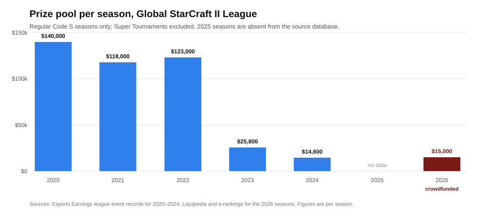

Founder audience: builders of competitive platforms, matchmaking systems and any product whose users accumulate a score. A FIDE title survives FIDE. An ATP ranking is computed from results the tour does not own, at events it does not all control, under rules that have not meaningfully changed in a century. A StarCraft II matchmaking rating is a number of undisclosed construction, held on a Battle.net account, measuring a game whose balance is rewritten by the same company that keeps the rating, awarded rank in a fixed top-200-per-region ladder that demotes the bottom five percent every day and expires the number if you stop playing. That vertical integration is what makes esports ratings feel so responsive and so worthless simultaneously — and in 2026 it produced the outcome the structure always allowed. The Esports World Cup put up $75 million across twenty-four games and did not include StarCraft II or any other real-time strategy title. The premier league in the sport ran on crowdfunding with a $15,000 prize pool. The only rating in the game that has kept publishing continuously is maintained by volunteers.
Every rating discussed in the sibling memos on chess and tennis is a claim about a person that outlives the institution recording it. A grandmaster title is awarded for life and is recognised whether or not the awarding federation still exists in its current form. An ATP ranking is recomputed from a public register of results; if the ATP vanished tomorrow, the match record would remain and any competent statistician could rebuild the list.
A StarCraft II MMR is none of these things. It is a value in a vendor's database, attached to a Battle.net account, describing performance in a product that vendor licenses to you. It cannot be exported into any other system, it is not recognised by any body outside the game, and it stops existing when the servers do. Blizzard displays it, but the matchmaking formula and the mapping from MMR to league boundaries are not published in full.
The tenancy terms are unusually explicit. Grandmaster is not a threshold, it is a fixed allocation of 200 seats per region — an admissions quota, not a standard. Keeping a seat requires thirty games every three weeks, and each day the bottom five percent are demoted regardless of whether they played badly.1 The score decays toward nothing the moment you stop feeding it.
That is a good matchmaking system. It queues players fairly and fast, which is the job. It is a terrible credential, and the confusion between the two is where founders in this category lose years.
FIDE's March 2024 rating adjustment moved 350,000 chess ratings by up to 400 points and was reported worldwide as a significant intervention. It happened once, was announced in advance, was accompanied by a published formula, and was debated by named statisticians.
StarCraft II does the equivalent quietly and repeatedly. Blizzard ended paid content development in October 2020 and has continued to ship balance patches since — adjusting unit costs, build times and abilities.2 Every such change alters the relationship between the skills a player has and the results the ladder records, which is to say it alters what the MMR measures, without altering the number. A 5,200 MMR in 2021 and a 5,200 MMR in 2026 are not the same claim about a person, and there is no version stamp on the score that tells you so.
The structural point is not that Blizzard is careless. It is that the party that changes the rules and the party that keeps the score are the same party, and there is no mechanism by which anyone can object. Chess separates these: FIDE keeps ratings but the rules of chess are not FIDE's to rewrite in any commercially meaningful way. Tennis separates these: the ATP keeps the rankings, the ITF governs the rules of the game, and the four events worth the most points are owned by neither. In esports the separation does not exist, cannot be created by the community, and is not contemplated by the licence agreement under which the game is played.

The same shape appears at the top of the pyramid. Annual prize money across tracked events fell from $3.17 million in 2019 to $736,027 in 2025, but the more revealing column is the count of players earning anything: 402 in 2019, 227 in 2023, 154 in 2024, 30 in 2025.6 A competitive scene is not primarily a prize pool, it is the number of people for whom the activity clears subsistence. That number went from a few hundred to a few dozen in six years.
Two decisions did most of it. The ESL Pro Tour, which had supplied the circuit's institutional backbone, ended in April 2025. The Esports World Cup, which had partly replaced it and which paid Clem $400,000 in 2024, dropped the game from its 2026 programme — from a $75 million pool spread across twenty-four titles.45 Neither decision was made by anyone accountable to StarCraft II players, and neither required notice.
The community reaction captures the dependency precisely. The commentator Kaelaris: "I suspect that also means I won't be doing any SC2 in 2026 since that was the only place nowadays that fancies taking a desk host for the game." The creator Simon 'Lowko' Heijnen: "Very sad to not have StarCraft 2 or any other RTS game at the EWC this year. Especially considering views and interest has been up noticeably."4
Note Heijnen's clause. Interest was reportedly up. The rating still went to zero economically, because the rating was never connected to demand — it was connected to two organisations' calendar decisions.
Set the outcomes side by side, because the asymmetry is the entire memo.
| Chess | Tennis | StarCraft II | |
|---|---|---|---|
| Who sets the rules | FIDE, by congress; the game itself is unowned | ITF, with the Grand Slams | Blizzard, by patch |
| Who keeps the rating | FIDE (and chess.com, Lichess, independently) | ATP/WTA; UTR and ITF independently | Blizzard only |
| Who runs the top events | FIDE, plus independent organisers | ATP, WTA, ITF and four independent Slams | Third parties, at the publisher's licence |
| Underlying results | Public game records, permanently | Public draw records, permanently | Vendor database, non-exportable |
| What survives the institution | The title, for life | The result record | Nothing |
| Cost to keep the number | One rated game whenever you like | 52-week decay | 30 games every 3 weeks |
Serral has earned $1.87 million and Maru $1.39 million playing StarCraft II, out of $43.5 million awarded across 7,535 tournaments since 2010.8 Those are careers, and they were real. But a retiring grandmaster keeps a title that will appear next to their name for the rest of their life, and a retiring StarCraft professional keeps a screenshot.
The durable artifacts in this ecosystem were all built by people who were not paid to build them.
Aligulac has rated StarCraft II professionals since the early 2010s on a Bayesian model with matchup-specific sub-ratings constrained to the general rating, weighting wins by opponent strength. It was still publishing finalised rating lists in 2026, having outlasted the World Championship Series, the ESL Pro Tour and the game's own development team. It also announced in May 2026 that it would drop HTTP support for its API by the end of June — the housekeeping of a project run on someone's evenings.7 SC2 Pulse performs the equivalent service for ladder statistics, and documents its own limits with more candour than the publisher does: match histories must be reconstructed, exact durations are unavailable through the API, and co-op, unranked and arcade activity are simply unknown.9
Read that as a finding rather than a tribute. The only portable, inspectable, methodologically documented ratings in StarCraft II are the ones built on top of the publisher's API by people with no commercial relationship to the publisher — and they exist entirely at the publisher's sufferance, since the API is the dependency. This is the same shape as the questions the Cal.com and Gemini CLI memos raise about building on someone else's repository, with one difference that makes it worse: there is no last permissively licensed commit to fork. There is no artifact at all, only an endpoint.
The clearest measure of what happened arrives from an unexpected direction. In the 2025 Esports Earnings table, "Chess.com" is a tracked competitive title with $1,925,160 awarded to 88 players across 11 events — more than two and a half times StarCraft II's $736,027.6
A five-hundred-year-old game with an unowned rulebook, a governing body that gives its rating away, and three separate platforms competing to host it now pays its top competitors better than the most institutionally celebrated real-time strategy title ever made. The difference is not popularity, production value or skill ceiling. It is that nobody can switch chess off. The Blizzard picture is not necessarily terminal — the company is widely reported to be preparing a new StarCraft title for a BlizzCon 2026 reveal, though nothing has been announced and the reporting is unconfirmed10 — but a new game would create a new ladder and a new rating, and every MMR earned since 2010 would remain exactly as portable as it is now.
The durable rule: a score is only a credential if it can be verified by someone who does not need your permission. Chess achieves this with a title register and public games. Tennis achieves it with public draws. StarCraft achieves it not at all, which is why the game produced two decades of extraordinary competition and left its players with nothing they can carry to the next thing.